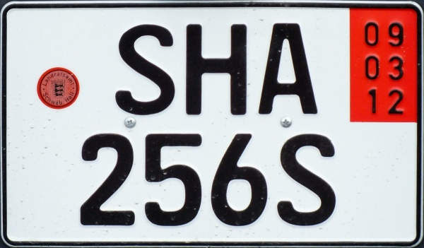
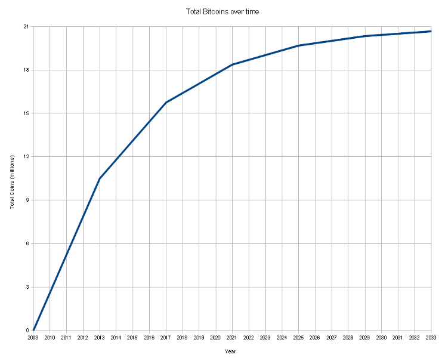

| z, ? | toggle help (this) |
| space, → | next slide |
| shift-space, ← | previous slide |
| d | toggle debug mode |
| ## <ret> | go to slide # |
| c, t | table of contents (vi) |
| f | toggle footer |
| r | reload slides |
| n | toggle notes |
| p | run preshow |
| P | toggle pause |
berkes Kessels

Bitcoin is een experimentele vorm van elektronisch geld, ... naar een ander persoon (kan) worden verzonden via het internet door iedereen met een Bitcoinadres.
In tegenstelling tot de meeste valuta is Bitcoin niet afhankelijk van het vertrouwen in een centrale uitgevende instelling. Dit elektronische geld maakt gebruik van een database verspreid over knooppunten van een peer-to-peer-netwerk om transacties te journaliseren, en maakt gebruik van cryptografie om te voorzien in de nodige beveiliging, zoals dat Bitcoins alleen kunnen worden uitgegeven door de persoon die er eigenaar van is, en nooit meer dan één keer uitgegeven kan worden door die eigenaar.
De peer-to-peertopologie van Bitcoin en het ontbreken van centrale administratie maakt hetpraktisch onmogelijk voor een overheid, of ieder ander, om de waarde van Bitcoins te manipuleren of meer *inflatie te induceren dan er van tevoren is vastgelegd. Het ontwerp zorgt voor anoniem eigendom en overdracht van waarde.

expected_hash = 000012345
payload = "The Blockchain" +
"The sha-sum of the last block"
"An extra transaction where I get BTC 25"
nonce = 1
untill(hash == expected_hash) {
hash = SHA2( SHA2( payload + nonce ) )
nonce = nonce + 1
}
print "Found it!"
announce_to_network(nonce, payload)